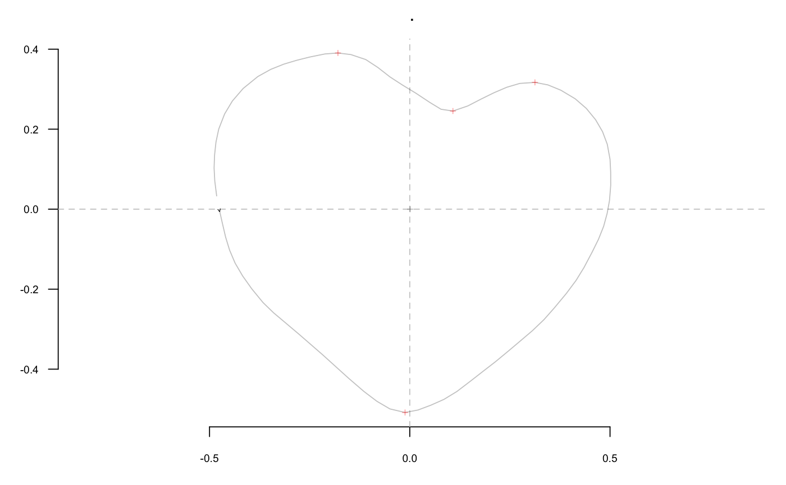
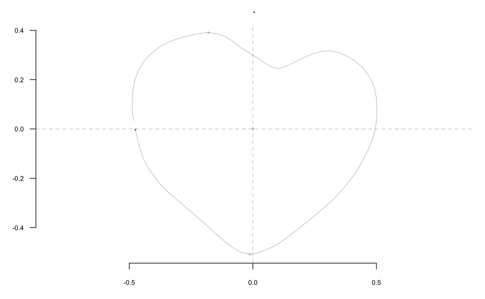
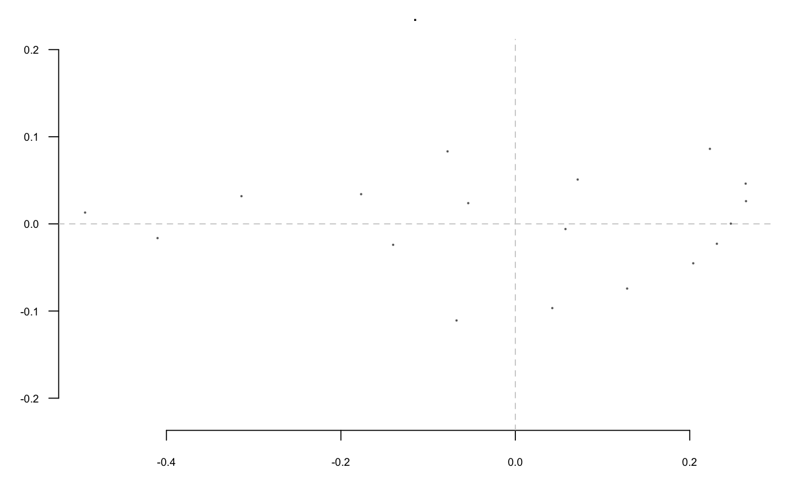
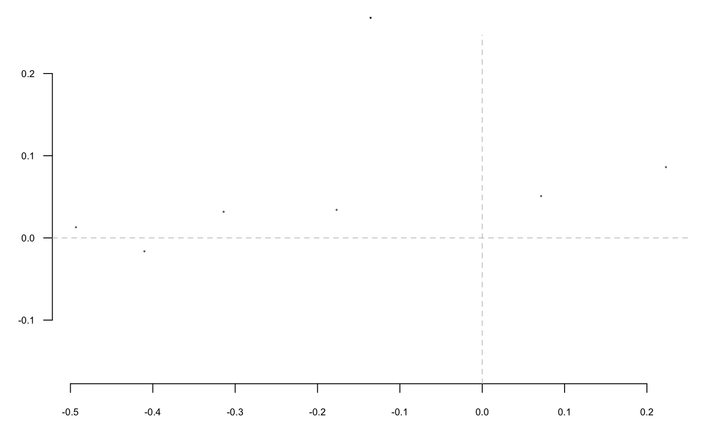

Helps reorder and retain landmarks by simply changing the order in which they
are recorded in the Coo objects. Note that for Out and Opn
objects, this rearranges the $ldk component. For Ldk, it rearranges
the $coo directly.
rearrange_ldk(Coo, new_ldk_ids)
| Coo | any appropriate |
|---|---|
| new_ldk_ids | a vector of numeric with the ldk to retain and in the right order (see below) |
Other ldk/slidings methods: add_ldk,
def_ldk, def_slidings,
get_ldk, get_slidings,
slidings_scheme
#>#> [[1]] #> [1] 65 56 50 19 #>#>#> [[1]] #> [1] 19 65 #>#>#> $AN1 #> [,1] [,2] #> [1,] -0.4933 0.0130 #> [2,] -0.0777 0.0832 #> [3,] 0.2231 0.0861 #> [4,] 0.2641 0.0462 #> [5,] 0.2645 0.0261 #> [6,] 0.2471 0.0003 #> [7,] 0.2311 -0.0228 #> [8,] 0.2040 -0.0452 #> [9,] 0.1282 -0.0742 #> [10,] 0.0424 -0.0966 #> [11,] -0.0674 -0.1108 #> [12,] -0.4102 -0.0163 #> [13,] -0.3140 0.0318 #> [14,] -0.1768 0.0341 #> [15,] 0.0715 0.0509 #> [16,] -0.0540 0.0238 #> [17,] 0.0575 -0.0059 #> [18,] -0.1401 -0.0240 #>#>#> $AN1 #> [,1] [,2] #> [1,] -0.4933 0.0130 #> [2,] 0.2231 0.0861 #> [3,] -0.4102 -0.0163 #> [4,] -0.3140 0.0318 #> [5,] -0.1768 0.0341 #> [6,] 0.0715 0.0509 #>